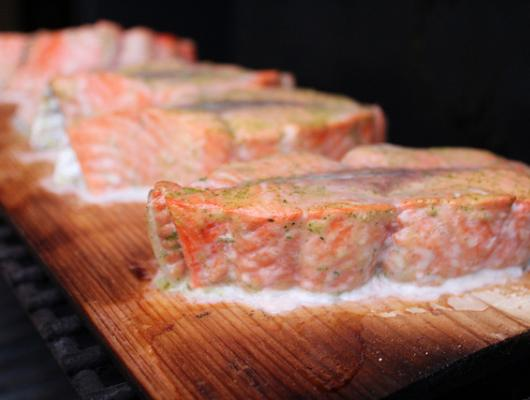

Cedar-Planked Salmon With Mustard Dill Sauce
This six-serving dish by Sheri Wetherell will leave you wishing for more.
The tender and perfectly crafted Cedar-Planked Salmon With Mustard
Dill Sauce has a perfect appearance as though cooked by God himself.
It's perfect for any occasion, family meal, sharing among friends,
or if you are single, you can eat it yourself. All in all, this is simply
the perfect dish. With simple ingredients and a true and tested process,
your Ceder-Planked Salmon, is sure to be just as perfect.
For the Salmon:
-4 salmon, fillets, (about 1 lb total)
-2 tablespoons olive oil
-1 teaspoon grated lemon, rind
-2 tablespoons lemon, juice
-2 tablespoon chopped fresh chives or 1 tbsp chopped green onion
-2 teaspoons Dijon mustard
-1 pinch salt
-1 pinch pepper
For the Dill Sauce:
-1 cup sour cream
-2 tablespoons finely chopped cucumber
-1 tablespoon chopped fresh dill or ½ tsp dried dill, weed
-2 teaspoons minced fresh chives or 2 tsp minced green onion
-2 teaspoons Dijon mustard
-1 pinch salt
-1 pinch pepper
-Soak two 12- x 7-inch (30 x 18 cm) untreated cedar planks in water
for at least 30 minutes or for up to 24 hours.
-Place salmon fillets on top of each plank.
-In small bowl, whisk together oil, lemon rind and juice, chives, mustard,
salt and pepper; brush some over salmon.
-Place planks on grill over medium-high heat; close lid and cook, brushing with
remaining lemon mixture for about 20 minutes or until fish flakes easily when tested with fork.
-Dill Sauce: Meanwhile, in small bowl, combine sour cream, cucumber, dill, chives, salt and pepper.
-Serve planks on platter with dill sauce.
